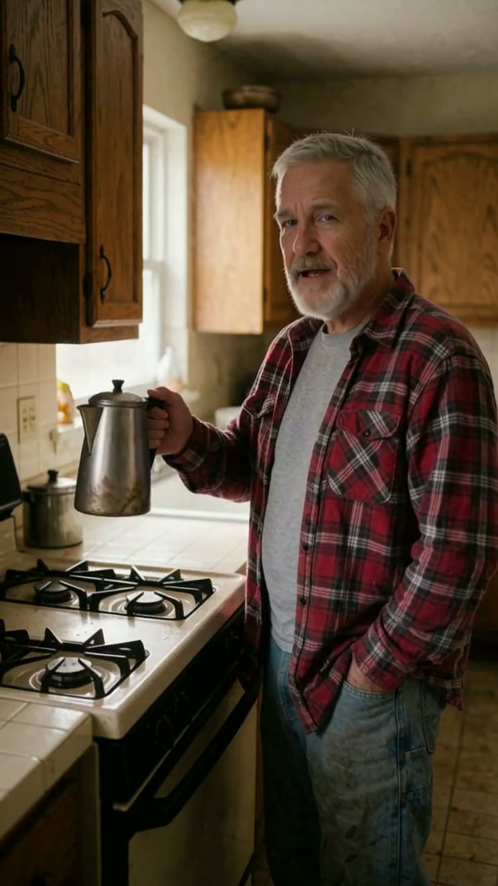
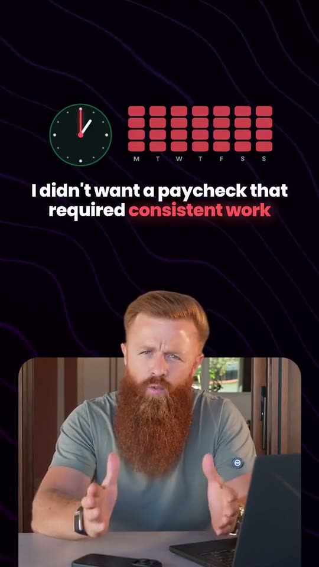
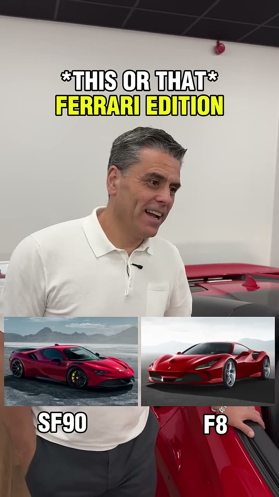

The work
Same face, every shot
Six frames from one film. Different rooms, light and angles, one person.
For your creator, the same method starts from their photos, then the suit, and stays locked from clip 1 to clip 20.
Cloned voice, synced lips
AI presenters speaking to camera in a cloned voice, cut as vertical shorts. Play them with sound.

AI-generatedTwo characters, two voices AI-generatedNine shots, same facesA real person's face and voice are only cloned with their written consent.
15 to 20 clips a month
Lock the character once, then ship in weekly batches.
Week 1
Lock the avatar and voice
Face, suit and voice built from the creator's photos and recordings. You approve before any clip is made.
Every week
A batch of five
Scripts in, five finished 9:16 clips out, with captions.
Every clip
Checked, then one revision round
Face, lips and voice checked before you see it.
Shorts I already deliver on a schedule

George Cordon · ShortMost jobs stop paying George Cordon · ReelGlobal e-commerce in 2026 George Cordon · ShortOrganic content isn't enough Baytree Cars · 2.5M viewsThis or That: luxury car edition
Baytree Cars · 2.5M viewsThis or That: luxury car edition

Baytree Cars · 2.2M viewsThis or That: Ferrari editionReal client shorts, shown with permission.
Tools
Paid models when they give the best shot, my own machine when the clip needs twenty takes.
- Video models
- Higgsfield, plus Kling, Veo and Seedance through API
- My own machine
- ComfyUI pipelines on an RTX 4090, so experiments don't burn credits
- Voice
- Voice cloning from a short clean recording
- Lip-sync
- Audio-driven lip-sync, checked clip by clip
- Edit
- Premiere Pro and DaVinci Resolve: captions, sound, 9:16 delivery
More AI work


Send me three photos and a voice note. I'll send back a test clip.
Contracts and payments go through Upwork.